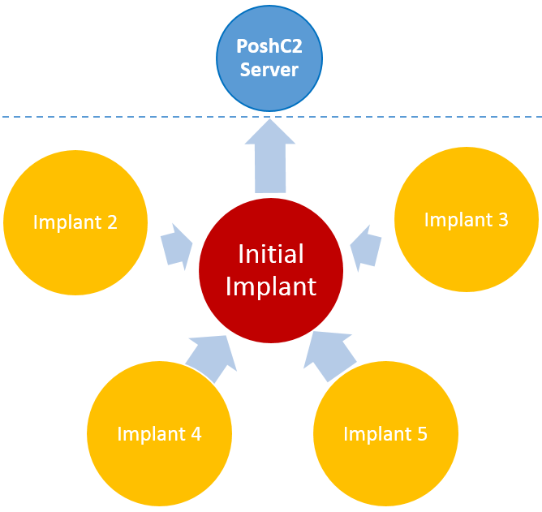

Lateral Movement¶
Lateral movement is the process of moving between machines on a target network, this is performed after the initial entry has succeeded. These all require that credentials are obtained before they are able to be executed. Methods for this can range from key-logging to the ‘Cred Popper’ and Mimkatz. The available methods that are currently built into Posh C2 are as follows:
Communication Methods¶
For the majority of these methods provide the option to select the method of communicating back with the C2 server :
- Normal
The implant will attempt to connect straight back to the C2 Server via the default method.
- Proxy
This configures the implant to connect back to the C2 Server through a proxy that the details are supplied for. Consider a network that requires the use of an outbound proxy, you have come across highly privileged credentials that enable you to laterally move but they have no rights to exit the network via the proxy. If you also happen to be in possession of creds which do have proxy rights then the this stage can be configured to use the credentials to perform the movement then the others to use the proxy to communicate back with the C2 Server.
- Daisy Chaining
Initially a valid implant is configured to load the daisy chaining module. Once this this has been performed any further implant that loads on a targeted host will communicate back to the C2 Server via the configured module instead of via a direct connection or a proxy server. This gives implants the ability for other internal hosts to connect through it like a proxy. The term daisy chain sprung to mind when visualising this type of implant and lateral movement.
{kind=link}